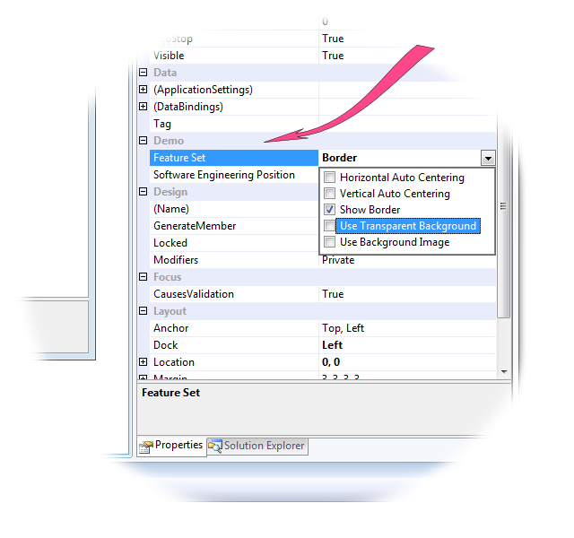

Table of Contents
1. Introduction
This article is the fourth article of the small series of articles on enumeration types I'm presenting to CodeProject members:
- Enumeration Types do not Enumerate! Working around .NET and Language Limitations;
- Human-readable Enumeration Meta-data;
- Enumeration-based Command Line Utility;
- The present article.
I will use the same code base, upgraded with new features. I will also refer to this work where it is needed for proper understanding of the matter. Conceptually, the present work is derived from the code of the article #2, but the code of the Enumerations library itself is derived from the code of the article #3, where the additional item as introduces, abbreviations of the names of the enumeration members. So, I gave this library a version number of 4.0. The new library is Enumerations.UI v.1.0.
1.1. Beyond the Article Title
The class EnumerationEditor is not really redundant. Not only it complements the class BitwiseEnumerationEditorin a matching styles; both classes show human-readable names and descriptions of the enumeration members, shown in the node tooltips on the tree nodes enumeration member values.
1.2. The Demo Application
Please look at the picture shown on top of this article. It demonstrates how the enumeration values can be edited in Visual Studio for a component. To see the demo in Visual Studio, build the solution, then locate the main form node of the Solution Explorer, click it to show the designer, select the bright rectangular control on left (it does nothing, just carries two demo enumeration properties) and activate the Properties window, locate the category "Demo" shown on the picture by the raspberry-colored arrow. It will demonstrate two editors; the property "Feature Set" uses the bitwise enumeration editors.
To see the same thing during runtime, just run the application. Even though the demo application is written in System.Windows.Forms, the library provided can be used in assemblies of all other types: WPF, ASP.NET, Silverlight or any other type, because, anyway, the enumeration types will be shown and edited in the same way, in Visual Studio and other, alternative .NET IDE.
2. The Usage by Example
Now, let's review the code sample used to obtain the PropertyGrid behavior described above:
namespace EnumerationEditorDemo {
using FlagsAttribute = System.FlagsAttribute;
using EditorAttribute = System.ComponentModel.EditorAttribute;
using DisplayNameAttribute = SA.Universal.Enumerations.DisplayNameAttribute;
using DescriptionAttribute = SA.Universal.Enumerations.DescriptionAttribute;
using AbbreviationAttribute = SA.Universal.Enumerations.AbbreviationAttribute;
using EnumerationEditor = SA.Universal.Enumerations.UI.EnumerationEditor;
using BitwiseEnumerationEditor = SA.Universal.Enumerations.UI.BitwiseEnumerationEditor;
using UITypeEditor = System.Drawing.Design.UITypeEditor;
using NonEnumerableAttribute = SA.Universal.Enumerations.NonEnumerableAttribute;
using SA.Universal.Enumerations.UI;
[Editor(typeof(BitwiseEnumerationEditor), typeof(UITypeEditor))]
[DisplayName(typeof(Data.DisplayNames)), Description(typeof(Data.Descriptions))]
[Flags]
public enum FeatureSet {
[NonEnumerable]
None = 0,
AutoCenterX = 1 << 0,
AutoCenterY = 1 << 1,
Border = 1 << 2,
[Abbreviation(6)]
TransparentBackground = 1 << 3,
[Abbreviation(11)]
BackgroundImage = 1 << 4,
[NonEnumerable]
Center = AutoCenterX | AutoCenterY,
[NonEnumerable]
All = AutoCenterX | AutoCenterY | Border | TransparentBackground | BackgroundImage,
}
[Editor(typeof(EnumerationEditor), typeof(UITypeEditor))]
[DisplayName(typeof(Data.DisplayNames)), Description(typeof(Data.Descriptions))]
public enum Position {
SoftwareArchitect,
PrincipalSoftwareEngineer,
TeamLeader,
TechnicalLead,
SeniorSoftwareEngineer,
SoftwareEngineer,
JuniorSoftwareEngineer,
}
}
I provided separate alias using directives for all of the attributes used, to show where each one comes from. The usage of the attributes DisplayName and Description is described in detail in my second article of this series; the use of abbreviations — in the third one. The Editor attributes define what editor should be used in PropertyGrid. The values defined by the Description attribute are shown in the tooltips of the tree nodes representing the enumeration member values.
Note the use of the NonEnumerable attribute. When dealing with the bitwise editor, it's very important to avoid showing the enumeration members not representing single bits.
Note that the Flags attribute is used. Generally, this attribute does not affect application runtime, but it is important to use the Flags attribute if System.Object.ToString() is used for an enumeration type; it may affect design time, useful for debugging, and so on…
3 How it Works?
3.1 The Main Idea
The whole idea of the technique used to edit the enumeration values in an agnostic manner, as required by the System.ComponentModel.EditorAttrubute and the universal editor which should be automatically invoked from any instance of the ProperyGrid, is just one subliminal method: System.Type.MakeGenericType.
Even the name of this important method is misleading: it actually expects a generic type to be an instance of Type on which this method is called, and substitutes the generic parameters by actual types and instantiates a generic type into a new type, which can make the returned type a fully-defined type, that is, non-generic. This is what happens in my code: the call creates a fully-defined type, typically an enumeration type.
Why doing so? Of course, it would be fairly easy to develop the editor and all required enumeration utilities base on reflection from scratch. But I wanted to reuse the mechanism I introduced in my first article of this series. That work introduced enumeration through enumeration type members and other important features which are much more fundamental than the topic of the present article; and the code is based on the generics, which is very important for the usage of concrete enumeration types. Programming with enumeration types in a type-agnostic manner is quite tricky, which is well illustrated by the next section about the "most difficult problem".
So, the idea was to use reflection code developed for concrete enumeration types, which performs reflection on the generic types. For this purpose, I've segregated the abstract class EnumerationItemBase from the derived generic class Enumeration<ENUM>, both representing a single enumeration member with all its properties. The only addition to the base class is the generic-type property and field representing the concrete-type enumeration member value, and the reflection mechanism itself. Naturally, the type-agnostic reflection should work with the runtime type of the object passed from the editor (with the compile-time type System.Object, of course) and return the objects of the abstract base type EnumerationItemBase. This is how:
internal static EnumerationItemBase[] ReflectItems(object value) {
Type type = typeof(Enumeration<>);
Type enumerationType = type.MakeGenericType(new Type[] { value.GetType() });
ConstructorInfo constructor = enumerationType.GetConstructor(Type.EmptyTypes);
object enumeration = constructor.Invoke(null);
IEnumerable enumerable = (IEnumerable)enumeration;
EnumerationItemList list = new EnumerationItemList();
foreach (object @object in enumerable)
list.Add((EnumerationItemBase)@object);
return list.ToArray();
}
This code is quite sophisticated but yet very simple. The core implementation using reflection is implemented in the constructor of the generic class Enumeration<enum>. It is explained in detail in my first article of this series.
For the cases when the types of the value object appear to be non-enumeration types, please see my first article of this series.
This will also work, but here is what happens next: in both enumeration editors, I check up in the type of the edited value is enumeration type or not. Apparently, there is no any sense to edit not an enumeration type, so the editor is simply not invoked. As it's not possible to check up during compile-time if some type-level attribute is applied to a right type, this is a reasonable solution which helps the developers to see the problem as soon as possible.
By the way, all the key or tricky techniques of this whole work are put in one file, "EnumerationUtility.cs". We just discussed one key technique; now let's discuss the most difficult issue I faced.
3.2 The Most Difficult Problem: the Underlying Integer Types
The real problem is the one specific to enumeration types, nothing else: they have different underlying integer types. And the mechanism of generics cannot be applied to primitive types. But working with separate bits requires using numeric integer types. Yes, this is also possible with enumeration types (as shown in my first article of this series), but… it requires concrete enumeration type, cannot be done directly for the abstract type System.Enum.
This would not be a problem if all of those types were unsigned (or even signed). In this case, all enumeration values could be converted to the "widest" type, for example, System.UInt64. No, this is impossible: there is no the "widest" type in the set of all signed and unsigned type. This is can be easily seen on the two "widest" candidates: one among the signed, another — among the unsigned types:
-9223372036854775808 0 9223372036854775807
[======================|======================] long (signed) 18446744073709551615
[=============================================] ulong
Apparently, the domains of the values intercept. If, by some weird reason, the user of the library uses ulong base type and actually use high explicitly defined values for some member, the conversion to long, or any other signed type will throw the System.InvalidCast exception. If the user uses long and actually uses any negative member value, the attempted conversion to ulong will throw the same exception. What do to? I recognized several possibilities:
- Using all the types which can be the underlying types of any enumeration types, which can be checked up by using the function
System.Enum.GetUnderlyingType (see http://msdn.microsoft.com/en-us/library/system.enum.getunderlyingtype(v=vs.110).aspx). This is the most popular suggestion on the forums. What can I say? Lame, lame, lame! - The use of the class
System.Runtime.InteropServices.Marshal to serialize any unknown type to array of bytes. The problem of this and next solution is that interoperation services always impose some risk of compromising of the platform compatibility of the code. Besides, the code is complex and next to impossible to debug, error-prone. - Similar to the above, using
Marshal to create something analogous to C++ reinterpret_cast. - The use of the unsafe mode of the assembly would allow working with pointers to the instance of the enumeration value. Using unsafe without special need for it is, well… unsafe. Such code is simper but also can be error-prone and the problems are hard to spot; memory pinning is involved.
- Values can be serialized into a memory stream and then parsed from a stream. Well, in addition to apparent performance hit (who cares about performance when it all happens on a separate click in the UI?), this solution is highly artificial. I call it "scratching right ear with left leg".
So, having it all in mind, I came to probably the simplest solution: using both long and ulong types with possible handling of the exception mentioned above:
internal static bool IsBitSet(object bit, object value) {
try {
return
((ulong)Convert.ChangeType(bit, typeof(ulong)) &
(ulong)Convert.ChangeType(value, typeof(ulong))) > 0;
} catch (System.InvalidCastException) {
return
((long)Convert.ChangeType(bit, typeof(long)) &
(long)Convert.ChangeType(value, typeof(long))) > 0;
}
}
internal static object SetBit(object bit, object value) {
Type underlyingType = Enum.GetUnderlyingType(bit.GetType());
try {
ulong numBit = (ulong)Convert.ChangeType(bit, typeof(ulong));
ulong numValue = (ulong)Convert.ChangeType(value, typeof(ulong));
ulong numResult = numValue | numBit;
return Convert.ChangeType(numResult, underlyingType);
} catch (System.InvalidCastException) {
long numBit = (long)Convert.ChangeType(bit, typeof(long));
long numValue = (long)Convert.ChangeType(value, typeof(long));
long numResult = numValue | numBit;
return Convert.ChangeType(numResult, underlyingType);
}
}
Apparently, the use of non-negative enumeration values is, by far, the most likely; so the code starts from the attempt of using ulong. In case of any negative value, ulong conversion is failed. Such cases are covered by using the type long.
I think this solution is the simplest and quite reliable. I will be highly excited if someone finds something better. I will be very impressed if someone finds a flaw, and will do my best to fix it.
In addition to the above is setting the initial value of the abstract-type enumeration value to some "generic" binary zero, which is, apparently, required to update the value from the bitwise editor. It also took some thinking but is much easier:
internal static object MakeZeroObject(Enum value) {
return Convert.ChangeType(0, Enum.GetUnderlyingType(value.GetType()));
}
Let's see how long this code can survive. This functionality can actually be eventually broken. To break it, 1) new CLR standard should introduce 128-bit integer types (or other types wider then long and ulong); 2) it should allow these types as the underlying integer type of enumeration type; 3) some user should actually use such types and use either negative or "big" values, to get in the part of the domain beyond the domain of long and ulong. If that happen, the fix will be needed to the code shown above: long and ulong should be replaced with those new type.
Even though 128-bit architectures are actually emerging, something is telling me that the fix won't be needed any time soon.
3.3 The Rest of it is Easy
The creation of the editor to be used in the System.ComponentModel.EditorAttribute is described in MSDN, maybe not in sufficient detail, but it's not too hard to figure out. Same goes about the type converters. Please see:
System.ComponentModel.EditorAttribute, http://msdn.microsoft.com/en-us/library/system.componentmodel.editorattribute%28v=vs.110%29.aspx
System.ComponentModel.TypeConverterAttribute, http://msdn.microsoft.com/en-us/library/system.componentmodel.typeconverterattribute%28v=vs.110%29.aspx
System.Drawing.Design.UITypeEditor, http://msdn.microsoft.com/en-us/library/system.drawing.design.uitypeeditor%28v=vs.110%29.aspx
System.ComponentModel.TypeConverter, http://msdn.microsoft.com/en-us/library/system.componentmodel.typeconverter%28v=vs.110%29.aspx
Both enumeration editors are based on one abstract base class implementing common functionality. This is the main editing method:
public override object EditValue(ITypeDescriptorContext context, IServiceProvider provider, object value) {
if (value == null) return null;
Type type = value.GetType();
if (!type.IsEnum) return null;
treeView.Nodes.Clear();
Populate(value);
edSvc = (IWindowsFormsEditorService)
provider.GetService(typeof(IWindowsFormsEditorService));
edSvc.DropDownControl(treeView);
return UpdateData(value, treeView);
}
The only less-than-obvious issue is to obtain the instance of the type shown the drop-down; it is of the type IWindowsFormsEditorService.
The rest of the code uses the enumeration utility described above and the facilities explained in my first and second articles of the series.
4. Conclusions
The present work rounds up my series on enumerations pretty well. The most recent version of all of the code covered by all the articles of the series can be found in the source code of the present article. The previous article adds library of the more application character: command line utility.
However, I've already made one little mistake in my previous article on the topic: I called it the last one in the series. At this moment, I also feel that the present article is the last one, but this time I am not so sure. If, by any chance, I got another idea on the topic, I'll try to write about it. If some readers give ask me an interesting question or give me another idea on the topic in this or any other way, I'll be very excited about it and will try to work at it. Which brings us to the last section…
5 Credits
I want to mention two CodeProject members in connection to this work.
Grant Frisken is the author of this CodeProject article: Localizing .NET Enums. He argued with me on the features of my library described in my first work. He insisted on the importance of the use of the type converters and System.ComponentModel.TypeConverterAttribute. I always criticized System.ComponentModel for pure maintainability and general architectural flaws and insisted that my approach has more fundamental and clear character. I hope we finally understood each other in this very interesting and friendly discussion. To finally reconcile our opinions, I can now add that this first work was correct, and it wasn't the place for the type converter, because it was unrelated to any UI. However, providing the "editability" for an enumeration type through PropertyGrid really requires the use of the type converters. It's just the right moment for doing so has come. :-)
Even though Grant's information did not give me the idea of the present work (which stems from my own works unrelated to the topic and my enumeration-related works referenced at the beginning of the article), I want to credit his interesting and useful article, and himself, for deep understanding of the matter and being a knowledgeable, helpful, open-minded and collaborative developer and a community member.
As to the idea of the present work… Bigbro_1985 asked me several interesting questions which just inspired me to write this article. Also, he brought the idea of using a tooltip to my attention; and I used the tree node tooltips for showing the description texts of the enumeration members. Thank you, Marco!
[UPDATE]
On April 4, 2017,
BillWoodruff reported a critical problem I've fixed on the same day.